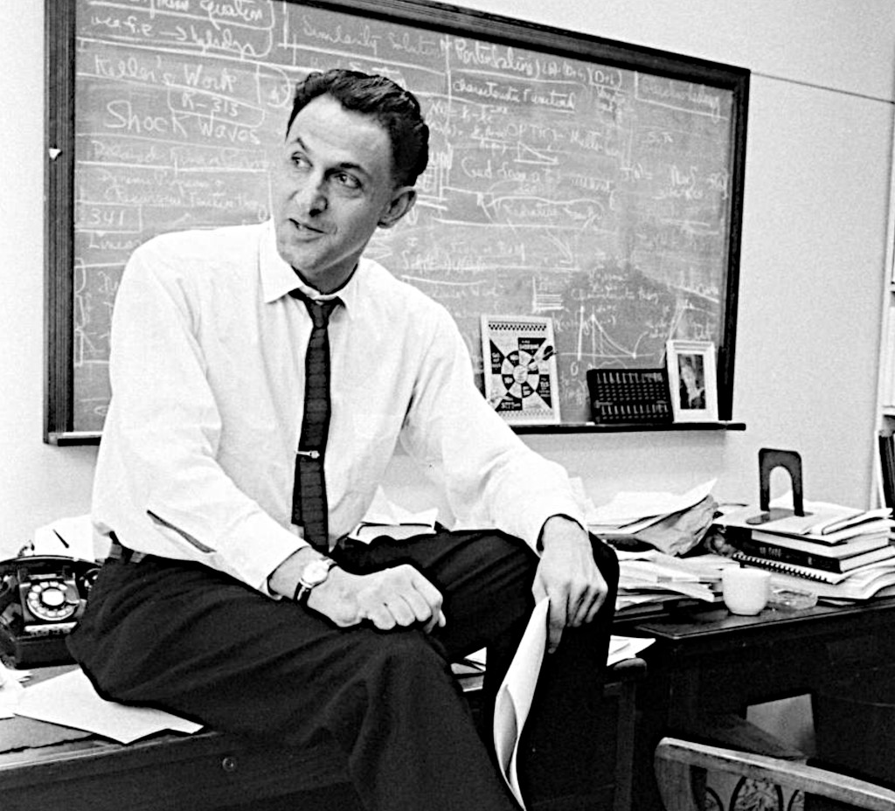

Consider a diffusion in \(\mathbb{R}^D\) with deterministic starting position \(x_0 \in \mathbb{R}^D\) and dynamics
\[ dX_t = b(X_t)dt + \sigma(X_t) \, dW_t \]
for a drift and volatility functions \(b: \mathbb{R}^D \to \mathbb{R}^D\) and \(\sigma: \mathbb{R}^D \to \mathbb{R}^{D \times D}\). On the time interval \([0,T]\), this defines a probability \(\mathbb{P}\) on the path-space \(C([0,T];\mathbb{R}^D)\). For two functions \(f: [0,T] \times \mathbb{R}^D \to \mathbb{R}\) and \(g: \mathbb{R}^D \to \mathbb{R}\), consider the probability distribution \(\mathbb{Q}\) defined as
\[ \frac{d \mathbb{Q}}{d \mathbb{P}} = \frac{1}{\mathcal{Z}} \exp {\left\{ \int_0^T f(X_s) \, ds + g(X_T) \right\}} \]
where \(\mathcal{Z}\) denotes the normalizing constant \[ \mathcal{Z}\; = \; \mathbb{E} {\left[ \exp {\left\{ \int_0^T f(X_s) \, ds + g(X_T) \right\}} \right]} . \tag{1}\]
The distribution \(\mathbb{Q}\) places more probability mass on trajectories such that \(\int_0^T f(X_s) \, ds + g(X_T)\) is large. As described in these notes on Doob h-transforms, the tilted probability distribution \(\mathbb{Q}\) can be described by a diffusion process \(X^\star\) with dynamics
\[ dX^\star = b(X^\star)dt + \sigma(X^\star) \, {\left\{ dW_t + \textcolor{blue}{u^\star(t, X^\star)} \, dt \right\}} . \]
The control function \( \textcolor{blue}{u^\star: [0,T] \times \mathbb{R}^D \to \mathbb{R}^D}\) is of the gradient form
\[ \textcolor{blue}{u^\star(t, x)} \; = \; \sigma^\top(x) \, \nabla \log[ \textcolor{green}{h(t,x)} ] \tag{2}\]
and the function \( \textcolor{green}{h(t,x)}\) is described by the conditional expectation,
\[ \textcolor{green}{h(t,x) = \mathbb{E} {\left[ \exp {\left\{ \int_t^T f(X_s) \, ds + g(X_T) \right\}} \mid X_t = x \right]} }. \]
The expression \( \textcolor{blue}{u^\star(t, x)} \; = \; \sigma^\top(x) \, \nabla \log[ \textcolor{green}{h(t,x)} ]\) is quite intuitive; in order to describe the tilted measure \(\mathbb{Q}\) that places more probability mass on trajectories such that \(\int_0^T f(X_s) \, ds + g(X_T)\) is large, the optimal control \(u^\star(t,x)\) should be in the direction of states such that the “reward-to-go” quantity \(\int_t^T f(X_s) \, ds + g(X_T)\) is large.
To obtain a variational description of the optimal control function \( \textcolor{blue}{u^\star}\), it suffices to express it as the solution of an optimization problem. It turns out that KL-divergences between diffusion processes are the right tool for this: we will write \(\mathbb{Q}\) as the minimizer of \(D_{\text{KL}}(\mathbb{P}^u \| \mathbb{Q})\) for a class of tractable probability distributions \(\mathbb{P}^u\) described by controlled diffusions. As described in these notes on the Girsanov Theorem, for any control function \(u(t,x)\), the controlled diffusion \(X^u\) with dynamics
\[ dX^u = b(X^u)dt + \sigma(X^u) \, {\left\{ dW_t + \textcolor{blue}{u(t, X^u)} \, dt \right\}} \]
and started at \(x_0\) induces a probability distribution \(\mathbb{P}^u\) on path-space given by
\[ \frac{d\mathbb{P}}{d\mathbb{P}^u}(x) \; = \; \exp {\left\{ -\frac 12 \int_{0}^{T} \|u(s,X^u_S)\|^2 \, ds - \int_{0}^{T} u(s,X^u_s)^\top \, dW_s \right\}} . \tag{3}\]
This allows one to write down explicitly the expression for the negative KL divergence
\[ -D_{\text{KL}}(\mathbb{P}^u \| \mathbb{Q}) = \mathbb{E}_u {\left[ \log {\left\{ \frac{d\mathbb{Q}}{d\mathbb{P}^u}(X^u) \right\}} \right]} \]
between \(\mathbb{P}^u\) and the tilted distribution \(\mathbb{Q}\). The notation \(\mathbb{E}_u\) denotes the expectation with respect to the controlled diffusion \(X^u\). The negative KL is, up to a constant, the usual Evidence Lower Bound (ELBO) used in variational inference. Since the quantity \(\log {\left\{ \frac{d\mathbb{Q}}{d\mathbb{P}^u}(X^u) \right\}} \) can be expressed as
\[ \log {\left\{ \frac{d\mathbb{P}}{d\mathbb{P}^u}(X^u) \right\}} - \log(\mathcal{Z}) + \int_0^T f(X^u_s) \, ds + g(X^u_T) \]
it follows from Equation 3 that \(-D_{\text{KL}}(\mathbb{P}^u \| \mathbb{Q})\) equals
\[ -\log(\mathcal{Z}) + \mathbb{E} {\left[ \int_{0}^{T} {\left\{ -\tfrac 12 \|u(s,X^u_s)\|^2 + f(X^u_s) \right\}} \, ds + g(X^u_T) \right]} . \]
Since the KL divergence is positive and the optimal control \(u^\star\) in Equation 2 drives the KL divergence to zero, we have that
\[ \max_u \; \text{ELBO}(u) = \log \mathcal{Z} \]
where the minimization is over all (reasonably well-behaved) control functions \(u: [0,T] \times \mathbb{R}^D \to \mathbb{R}^D\) and
\[ \text{ELBO}(u) \; = \; \mathbb{E} {\left[ \int_{0}^{T} {\left\{ -\tfrac 12 \|u(s,X^u_s)\|^2 + f(X^u_s) \right\}} \, ds + g(X^u_T) \right]} . \]
For maximizing the ELBO, the control needs to drive the trajectories to regions where \(\int_{0}^{T} f(X^u_s) \, ds + g(X^u_T)\) is large while at the same time keep the control effort \(\int_{0}^{T} \|u(s,X^u_s)\|^2 \, ds\) small. The optimal control \(u^\star\) is given by Equation 2 and Equation 1 gives that
\[ \begin{align} \log \mathcal{Z} &= \log \mathbb{E} {\left[ \exp {\left\{ \int_0^T f(X_s) \, ds + g(X_T) \right\}} \right]} \\ &= \log[ \textcolor{green}{ h(0,x_0) } ]. \end{align} \]
Since there was nothing really special about the starting point \(x_0\) and the time horizon \(T>0\), the above derivation gives the solution to the following stochastic optimal control problem. It is written as a maximization problem although a large part of the control and physics literature writes it as an equivalent minimization problem. Consider the reward-to-go function (a.k.a. value function) defined as
\[ V(t,x) = \sup_u \; \mathbb{E} {\left[ \int_{t}^{T} {\left\{ -\tfrac 12 \|u(s,X^u_s)\|^2 + f(X^u_s) \right\}} \, ds + g(X^u_T) \mid X_t = x \right]} . \]
We have that
\[ \begin{align} V(t,x) &= \log \mathbb{E} {\left[ \exp {\left\{ \int_t^T f(X_s) \, ds + g(X_T) \right\}} \mid X_t = x \right]} \\ &= \log[ \textcolor{green}{h(t, x)} ]. \end{align} \]
This shows that optimal control \(u^\star\) can also be expressed as
\[ u^\star(t,x) = \sigma^\top(x) \nabla \log[ \textcolor{green}{ h(t,x) }] = \sigma^\top(x) \, \nabla V(t,x) . \tag{4}\]
The expression \(\sigma^\top(x) \, \nabla V(t,x)\) is intuitive: since we are trying to maximize the reward-to-go function, the optimal control should be in the direction of the gradient of the reward-to-go function.
Finally, let us mention that one can easily derive the Hamilton-Jacobi-Bellman equation for the reward-to-go function \(V(t,x)\). We have
\[ V(t,x) = \sup_u \; \mathbb{E} {\left[ \int_{t}^T C_s \, ds + g(X^u_T) \right]} \]
with \(C_s = -\tfrac12 \|u(s,X^u_s)\|^2 + f(X^u_s)\). For \(\delta \ll 1\), we have
\[ \begin{align} V(t,x) &\; = \; \sup_u \; {\left\{ C_t \, \delta + \mathbb{E} {\left[ V(t+\delta, X^u_{t+\delta}) \mid X^u_t=x \right]} \right\}} + o(\delta)\\ &\; = \; V(t,x) + \delta \, \sup_{u(t,x)} \; {\left\{ C_t + (\partial_t + \mathcal{L}+ \sigma(x) \, u(t,x) \, \nabla) \, V(t,x) \right\}} + o(\delta) \end{align} \]
where \(\mathcal{L}= b \nabla + \sigma \sigma^\top : \nabla^2\) is the generator of the uncontrolled diffusion. Since \(C_t = -\tfrac12 \|u(t,x)\|^2 + f(x)\) is a simple quadratic function, the supremum over the control \(u(t,x)\) can be computed in closed form,
\[ \begin{align} u^\star(t,x) &= \mathop{\mathrm{argmax}}_{z \in \mathbb{R}^D} \; -\tfrac12 \|z\|^2 + \left< z, \sigma^\top(x) \nabla V(t,x) \right>\\ &= \sigma^\top(x) \, \nabla V(t,x), \end{align} \]
as we already knew from Equation 4. This implies that the reward-to-go function \(V(t,x)\) satisfies the HJB equation
\[ {\left( \partial_t + \mathcal{L} \right)} V + \frac12 \| \sigma^\top \nabla V \|^2 + f = 0 \tag{5}\]
with terminal condition \(V(T,x) = g(x)\). Another route to derive Equation 5 is to simply use the fact that \(V(t,x) = \log h(t,x)\); since the Feynman-Kac gives that the function \(h(t,x)\) satisfies \((\partial_t + \mathcal{L}+ f) h = 0\), the conclusion follows from a few lines of algebra by starting writing \(\partial_t V = h^{-1} \, \partial_t h = -h^{-1}(\mathcal{L}+ f)[h]\), expanding \(\mathcal{L}h\) and expressing everything back in terms of \(V\). The term \(\|\sigma^\top \nabla V\|^2\) naturally arises when expressing the diffusion term \(\sigma \sigma^\top : \nabla^2 h\) as a function of the second derivative of \(V\); it is the idea of the standard Cole-Hopf transformation.